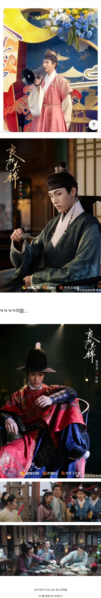

동북공정 심해진 중국 사극들
댓글
쟤네 저 구슬 어디 달리는 건지도 모르네
상투 악세서리냐고
유구한 수천년 역사 어따 팔아먹고 저지랄?
아 다 태우셨다구요? 니들 손으로요? 왜요?
박살냈자나
저나라는 어쩌다 저리된거지;
통일적 다민족 국가론에 입각하기 때문에 그래
그래서 발해뿐만 아니라 고구려도 중국의 지방정권 중 하나라고 주장하는 중임
조선민족도 중국의 여러 민족 중 한 종류라고 보고 있고.
즉, 언젠가 기회가 오면 한반도를 병합할 꿍꿍이가 숨어있는 것이지
조선족이 200만명 가까이 되는데 걔네가 어? 나 중국인 아니야? 그럼 뭐지? 라는 생각 자체를 가지지 못하도록 막아야됨
대한민국은 고구려-고려-조선-대한제국을 계승한 국가임. 실제로 대한제국의 마지막 영토를 실효지배하는 것도 우리임.
중국이 발해와 고구려를 자기들의 선조라 자처한다?
그러면 우리가 그 고구려 정통후계이니, 중국 역사도 미수복지역의 일부민족의 역사라고 주장하는게 맞지 않을까? 심지어 조선은 대명제국의 의지를 이어받은 소중화이고, 우리는 그 조선의 후계니 당연히 중국역사는 우리것 아님?
동북공정을 인정하고 대신 정당한 우리 영토인 만주와 중원을 받아올 필요가 있다고 봄. 티벳 위구르지역 제외 고토회복운동 가즈아
우린 요동하고 만주만 먹으면 된다
그렇게 따지자면... 미국에 거주하는 한족들이 레알 만년역사 주장하게되면... 중국도 미국의 미수복 지역됨
왜 변발안함?
동북삼성 수복 마렵네
자기들 자료가 없으니 옆집 드라마로 검토하는거지
동이족 오랑캐 밥그릇까지 빼앗아가고 싶은 거임?
중화의 위대함은 온데간데없이 뭐하는 거임? 하긴 즈그들 문화유산까지 뽀개는 종자들이니 뭐
첫 번째와 두 번째의 저 망건은 헤어밴드로 된 건 조선식. 명나라는 망건이 머리를 완전히 덮는 두건
세 번째에 등장하는 갓은 원 말기 ~ 명 초기 양식의 모자가 맞음. 다만 저 꼭대기에 달린 건 조선식 장식임. 비율도 안맞아서 이상해보임.
네 번째 포졸복은 양심출타한 조선식 복식 카피고 중국 내에서도 욕쳐먹음
다섯 번째는 퓨전 사극물로 기억하는데 그래도 저걸 왜 저 지랄을 하는지 이해 1도 안됨 차라리 불멸의 이순신 유격쇼면 웃기기라도 하지
저 전립? 무관 모자. 저건 중국에 없던 거임?? 예전에 동북공정이란 말 나오기도 전 꼬꼬마 시절에 중국 무협 드라마? 영화? 같은데서도 봤던 거 같긴 한데..
요즘 보면 오히려 자기네 정체성 잃는거 같은데
그거 문화대혁명인지 뭔지 때문에
없어진 지 오래됨ㅋㅋㅋ
ㅋㅋㅋㅋㅋ 바퀴벌레들
찡깨
역시 병신들
즈그들도 변발 밀기 싫은가벼
동북공정도 동북공정인데
한번씩 유튜브 쇼츠에 중드 한번씩 뜨는거 댓글보면 씨발 기도 안참 진짜 어쩌다 한번 소비하는게
한국사람들이 중드어쩌다 한번 소모할껀데 남주 시발 물고빨고 하는 댓글보면 얼탱이가 없음
얼마전엔 치하라고 여자주인공이 연기에 빠져가지고 컷나왔는데도 우는연기 못멈춰서 계속 우는
그런 쇼츠떠서 이게 뭔가 하고 찾아서봤는데 니미럴
여주는 진짜 괜찮음 얼굴도 나쁘지않고 연기도 좋아
근데 이 병신시발 남주새끼들 얼굴이 진짜 토나올거같아 드라마 주인공 얼굴합이 존나 안맞음
나머지 남자배역들도 와꾸바리 시발 느끼하다해야되나 성형을 존나 해서 그런가 얼굴합도 안맞고
무협은 더함 시발 애들 진짜 cg도 문제고 남주 와꾸가 씨발.....저래만들어놓고 중간중간에
동북공정용으로 뭐 하나 슬그머니 쳐넣어두는거 토나옴 이새끼들
숏츠가 진짜 심함 ㅋㅋㅋ 제목부터 한드라고 박아놓음 ㅋㅋㅋㅋ 고장극에는 동북공정 요소 꼭 넣고 ㅋㅋㅋ
문화씹혁명 때 다 태워버렸으니 뭐.. 보고 베낄 수밖에 없는 건가 ㅋㅋ
쟤네 전통은 변발 아님?
저 정도면 애착국 1호;
닉네임에서 느껴지는 진정성
고려양, 조선양, 이제는 대한양까지... 중국은 그저 한국 문화를 사랑하긴 하는데 뒤틀려있음
재미동포의 역사와 숫자, 전체 인구의 비율이 더 높으니 한국문화는 중국문화보다는 미국문화의 하위문화임이 더 설득력있지않나?
근본도 없는 븅신들이니 남의 문화를 탐하지 ㅋㅋ
문화 지들이 태워서 없으니까 그냥 옆나라들꺼 따라는거 좀 웃기긴함 ㅋㅋㅋㅋㅋㅋ
한국이 없으면 존재감조차 없는 등신같은 나라를 만든 짱.깨
걍 한국에게 복종 하는거잖아 ㅋㅋ
진짜 잘 몰라서 그러는데
명나라 - 조선은 의복 비슷하지 않음?
망건이 조선후기꺼임
명나라 조선 의복이 비슷한 게 아니라 관복이 비슷한 거.
조선의 속국답군
사극에 탕후루가 왜 나와 ㅋㅋㅋㅋㅋㅋㅋ
한편으로는 불쌍하네
대한민국의 속국 중국
한국 문화를 차오시엔족 문화라면서 중국의 소수민족 문화다~ 지껄이는데
중국 내 차오시엔족 비율은 0.12%
한국 내 중국인 귀화자의 비율은 0.25~0.3%로 중국 내 차오시엔족 비율보다 높다.
그러니 중국의 문화는 우리나라 소수민족의 문화다
반박시 니말이 맞음
자기들껀 중티 나는거 이제 깨달았나보다
저런거 하나하나가 열등감에 쩔어있는 증거긴 함
지들 문화도 다 태워버려서그렇지 찾아보면 좋은거 많을텐데ㅋㅋ
문화대혁명이후 새로 시작한 역사 100년도 안된 신생국가니 전통있는 우리나라를 부러워하는것도 이해는 가지만 너무하네
한국이 없으면 살아갈 수 없는 지경이라구ㅋㅋㅋㅋㅋㅋ